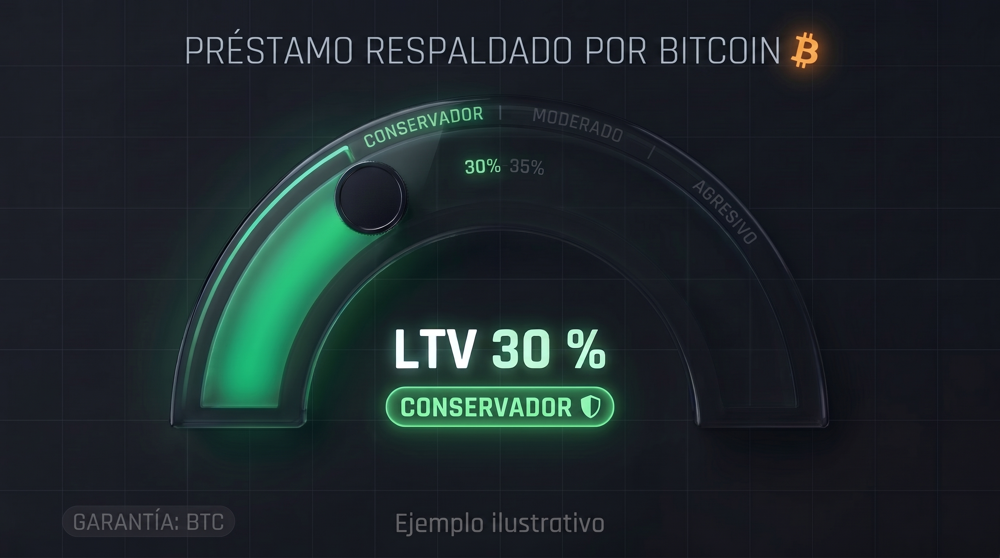
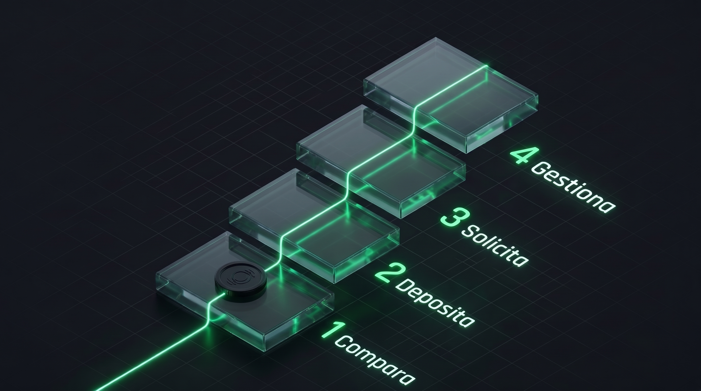
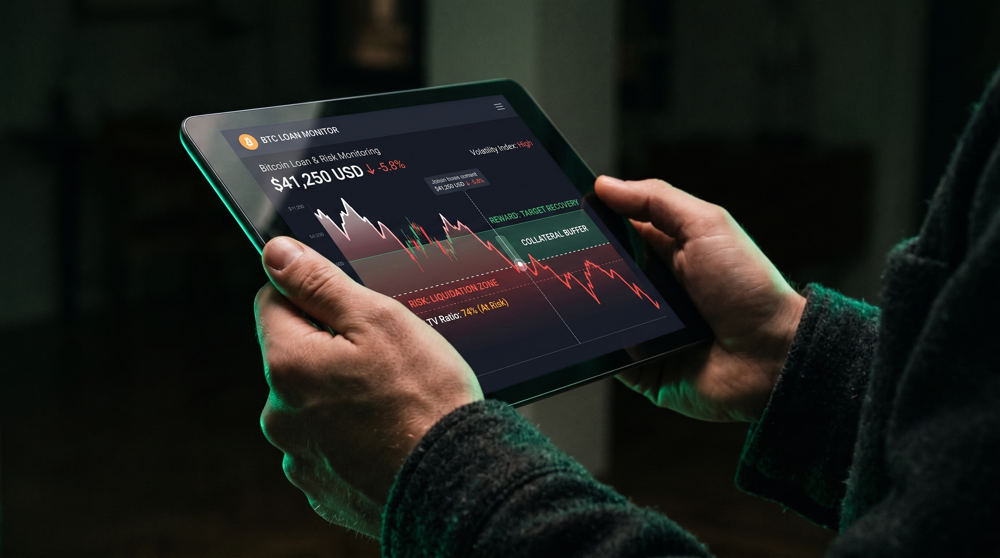

CriptoPrenda · Educación financiera
¿Cómo obtener liquidez con préstamos de Bitcoin en México sin vender tus activos?
sin vender tus activos?
Javier Villalobos Fernandez 28 de agosto de 2026
A la hora de necesitar capital, vender tus criptomonedas suele ser la primera idea, pero esto implica perder posibles rendimientos futuros y, a menudo, generar eventos fiscales desfavorables ante el SAT. Si necesitas flujo de caja para aprovechar una oportunidad o cubrir un gasto, la solución más eficiente es usar tus activos como garantía. En este artículo descubrirás cómo obtener liquidez inmediata a través de préstamos respaldados en Bitcoin, manteniendo la propiedad de tus criptomonedas y optimizando tu carga tributaria.
1. Compara y elige una plataforma con cobertura en México
El primer paso es seleccionar un proveedor que ofrezca un buen equilibrio entre seguridad percibida, tasas de interés y facilidad para retirar los fondos en territorio mexicano. Estos son los principales competidores en el mercado:
Cripto Prenda: Rapidez y confianza en México
Ideal si buscas alta confiabilidad. En México es la opción que más rapido entrega el préstamo , nunca liquidan tu bitcoin y los terminos del préstamo son los más transaprentes del mercado.
Ventajas:
• Recibe hasta el 70% del valor de tu BTC: Uno de los prestamos que más te otorgan por tu BTC • Sin margin calls: La única plataforma que no vende tí Bitcoin sin importar si el precio baja. Tus criptomonedas siempre estan resguardadas • El Bitcoin no se presta ni se rehipoteca: Cripto Prenda no presta, rehutiliza ni rehipoteca tu Bitcoin, queda resguardado en Bovedas segregadas institucionales. • Tasas Fijas: Tu préstamo se mantiene igual todo el periodo, no hay reajustes de tasa por movimientos del mercado ni ajustes periodicos.
Desventajas:
• Debes abrir cuenta con sus aliados:es Para poder recibir el préstamo es necesario abrir una cuenta con sus aliados en Money Free Flex, donde se deposita el monto. • Por ahora solo aceptan Bitcoin: Hasta el momento la única garantía para prétamo que acepta Cripto Prenda es Bitcoin, mientras algunas otras plataformas aceptan otras formas de garantía.
Ledn: Transparencia y especialización
Se enfocan casi exclusivamente en Bitcoin y USDC, ofreciendo auditorías de reservas públicas (Proof-of-Reserves), lo cual reduce el riesgo de contraparte.
Ventajas:
• LTV fijo del 50%: Requiere depositar el equivalente al 200% de tu préstamo en BTC, lo que reduce drásticamente la probabilidad de liquidación ante caídas de precio. • Tasas previsibles (9.25% - 11.49% APR): Interés anual fijo sin variaciones sorpresivas, acompañado de auditorías públicas de reservas (Proof-of-Reserves) semestrales. • Tratamiento fiscal claro: Al ser un contrato de crédito tradicional en USD/USDC, facilita la deducción o acreditación del flujo como pasivo no gravable ante el SAT.
Desventajas
• Comisión de apertura (1.5% - 2.0%): Aplica un cobro administrativo inicial calculado sobre el monto total prestado. • Fricción de salida (2 pasos / 24 hrs): No ofrece transferencias bancarias directas a México. Debes recibir USDC, enviarlo a un exchange local (donde absorbes un spread de conversión de ~0.4% a 0.8%) y de ahí ejecutar el retiro vía SPEI.
Nexo: Flexibilidad y líneas de crédito dinámicas
Funciona como una línea de crédito donde solo pagas intereses por lo que usas. Permite retirar liquidez en stablecoins que luego puedes convertir fácilmente a pesos mexicanos (MXN) a través de exchanges locales.
Ventajas
• Tasa preferencial desde 1.9% APR: Si mantienes un LTV muy conservador (menor al 20%) y alcanzas el nivel de fidelidad Platinum. • Liquidación parcial gradual: Si el precio cae, la plataforma vende únicamente el porcentaje exacto de BTC necesario para reequilibrar tu LTV, no la totalidad de tu garantía. • Cálculo de interés diario sin plazo fijo: Puedes liquidar el préstamo a las 24 horas de haberlo tomado sin penalizaciones por pago anticipado.
Desventajas
• Requisito de capitalización en Token NEXO: Para acceder a las tasas bajas (1.9%–3.9%), exige que al menos el 10% del saldo de tu cuenta esté invertido en su token nativo (NEXO). • Tasa base elevada de hasta 15.9% APR: Si no adquieres el token nativo y utilizas el LTV máximo (50%), la tasa de interés se vuelve significativamente más costosa que la competencia.
Binance Loans: Rapidez dentro de un ecosistema amplio
Si ya operas en este exchange, puedes bloquear tu Bitcoin y obtener liquidez en USDT o BUSD , para después liquidarlos en su mercado P2P directamente a tu cuenta bancaria en México.
Ventajas
• Tasa variable calculada por hora (desde 3.12% APR): En la modalidad de préstamos flexibles, pagas proporcionalmente por cada hora que mantengas la línea abierta pero puede variar. • LTV inicial más alto (hasta 65% - 78%): Permite retirar una mayor cantidad de liquidez por cada Bitcoin depositado en comparación con plataformas tradicionales.
Desventajas
• Umbral de liquidación agresivo (91% LTV): Si el precio de BTC cae bruscamente y el LTV alcanza el 91%, el sistema liquida automáticamente tu colateral y cobra un recargo adicional del 2% sobre el capital adeudado.
• Margen de reacción reducido (Margin Call al 75% - 85% LTV): Las notificaciones de riesgo son automatizadas y requieren un monitoreo constante, dejando un margen de maniobra muy ajustado durante episodios de alta volatilidad.
2. Deposita tu Bitcoin como garantía (Colateral)
Una vez creada y verificada tu cuenta, debes fondearla con el Bitcoin que respaldará tu préstamo. • Instrucciones: Dirígete a la sección de fondeo de la plataforma elegida y transfiere tu BTC desde tu cold wallet o exchange.
• Qué estás tratando de lograr: Establecer tu poder de préstamo. Las plataformas utilizan un indicador llamado Loan-to-Value (LTV) o Relación Préstamo-Valor. Por seguridad, la mayoría te permitirá pedir prestado entre el 30% y el 50% del valor de tu Bitcoin.
3. Solicita los fondos en Stablecoins o moneda Fiat
Con tu garantía depositada, configura los parámetros de tu préstamo. • Instrucciones: Selecciona el monto que necesitas y la moneda de recepción (recomendable USDC o USDT para mayor agilidad en México). Revisa y acepta las tasas de interés anuales (APR).
• El objetivo: Obtener capital líquido de forma inmediata. Al recibir stablecoins, puedes enviarlas a un exchange local (como Bitso) y convertirlas a pesos mexicanos vía SPEI con comisiones mínimas.
4. Gestiona el riesgo de volatilidad y liquida el préstamo
El último paso es el mantenimiento de tu línea de crédito. El mercado cripto es volátil, por lo que debes monitorear tu LTV, aúnque no cripto prenda eso no es un problema porque tu Bitcoin nunca se liquida si baja el Bitcoin. • Instrucciones: Si el precio de Bitcoin baja drásticamente, la plataforma te pedirá agregar más garantía (Margin Call) o venderá una fracción para cubrir el riesgo. • Recomendación vital: Mantén siempre un LTV inicial bajo (ej. 30%) para tener margen de maniobra. Cuando tengas la liquidez de vuelta, paga el capital y los intereses generados para liberar tu Bitcoin íntegramente.
El único préstamo que no liquida tu Bitcoin si el precio cae
Tu colateral no se liquida. A diferencia del modelo de la competencia, no operamos con margin calls automáticos. Si el precio del Bitcoin cae 50%, 70% o incluso más, tu préstamo sigue activo bajo las mismas condiciones que firmaste. Conocer más
Conclusión y siguientes pasos
Usar préstamos de Bitcoin es una excelente estrategia para acceder a liquidez rápida y apalancar tu crecimiento sin sacrificar tus posiciones a largo plazo. Para comenzar a integrar estas estrategias, evalúa qué préstamo se alinea mejor con tu nivel de confianza y necesidades de retiro. Si quieres profundizar en cómo estructurar un modelo financiero aprovechando estos instrumentos, revisa nuestras opciones de prestamos aquí.
Recursos visuales


